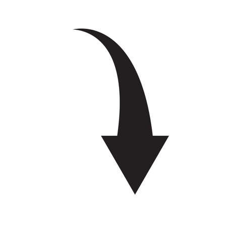

<- Vous pouvez déplier le "filtre" en glissant la souris sur la barre grisé vertical entre les deux images pour changer l'image de fond !
J'essaye d'intégrer un "filtre" qui permet de changer le fond sans modifier la page, je rencontre encore des problèmes mais les premiers résultat sont ce que je souhaite. Il pourrait être sympas de l'automatiser, avec une animation de balayage par exemple.
Essayez 